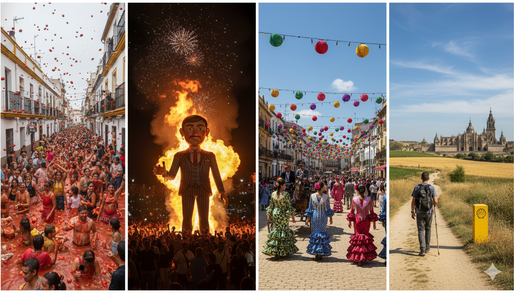

1. 欢迎来到第三课：过去的故事
¡Hola! 在这节课中，我们将解锁一项至关重要的语言技能：用西班牙语讲述过去。我们将学习如何叙述一次旅行、一段经历或一个昨天发生的故事。
- 本节课目标: 掌握西班牙语中描述过去事件的核心时态，能够清晰地叙事。
- 核心语法: 简单过去时, 过去未完成时, 现在完成时。
2. 语法核心 (1): 简单过去时
这是我们用来叙述已经完成、有明确起止点的过去动作的时态，西班牙语称为 Pretérito Indefinido。想象你在报告昨天发生了什么事，用的就是这个时态。
A. -ar 结尾动词 (e.g., comprar - to buy)
| 人称 | 变位 | 例子 |
|---|---|---|
| Yo (我) | -é | compré |
| Tú (你) | -aste | compraste |
| Él/Ella/Usted (他/她/您) | -ó | compró |
| Nosotros/as (我们) | -amos | compramos |
| Vosotros/as (你们) | -asteis | comprasteis |
| Ellos/Ellas/Ustedes (他/她们/您们) | -aron | compraron |
例句: Ayer compré un libro. (昨天我买了一本书。)
B. -er / -ir 结尾动词 (e.g., comer - to eat, vivir - to live)
在简单过去时中，-er和-ir结尾的规则动词变位完全相同。
| 人称 | 变位 | 例子 (comer) | 例子 (vivir) |
|---|---|---|---|
| Yo (我) | -í | comí | viví |
| Tú (你) | -iste | comiste | viviste |
| Él/Ella/Usted (他/她/您) | -ió | comió | vivió |
| Nosotros/as (我们) | -imos | comimos | vivimos |
| Vosotros/as (你们) | -isteis | comisteis | vivisteis |
| Ellos/Ellas/Ustedes (他/她们/您们) | -ieron | comieron | vivieron |
例句: Anoche comimos en un restaurante nuevo. (昨晚我们在一家新餐厅吃了饭。)
例句: Mi abuelo vivió en China tres años. (我的祖父在中国住过三年。)
3. 语法核心 (2): 不规则动词
有些非常高频的动词在简单过去时 (Irregulares en Pretérito Indefinido) 中完全不按规则变位，需要特别记忆。
A. 动词 Ser (是) 和 Ir (去)
这两个动词在简单过去时中的变位完全一样，只能根据上下文来区分。
| 人称 | 变位 (Ser/Ir) | 例句 (Ser) | 例句 (Ir) |
|---|---|---|---|
| Yo | fui | Fui estudiante. | Fui a la oficina. |
| Tú | fuiste | Fuiste mi jefe. | Fuiste al mercado. |
| Él/Ella/Usted | fue | Fue una buena idea. | Fue a España. |
| Nosotros/as | fuimos | Fuimos amigos. | Fuimos al cine. |
| Vosotros/as | fuisteis | Fuisteis testigos. | Fuisteis a la fiesta. |
| Ellos/Ellas/Ustedes | fueron | Fueron problemas. | Fueron a casa. |
例句: Ayer fui al supermercado. (昨天我去了超市 - Ir)。
例句: La fiesta fue muy divertida. (派对非常有趣 - Ser)。
B. 动词 Dar (给) 和 Ver (看)
这两个动词的变位很相似，结尾与-er/-ir动词类似，但没有重音符号。
| 人称 | Dar (给) | Ver (看) |
|---|---|---|
| Yo | di | vi |
| Tú | diste | viste |
| Él/Ella/Usted | dio | vio |
| Nosotros/as | dimos | vimos |
| Vosotros/as | disteis | visteis |
| Ellos/Ellas/Ustedes | dieron | vieron |
例句: Le di el informe al gerente. (我把报告给了经理。)
例句: ¿Viste las noticias ayer? (你昨天看新闻了吗？)
C. 词根变化类不规则动词
另一组非常重要的不规则动词，它们的词根会发生变化，并使用一套统一的特殊词尾: -e, -iste, -o, -imos, -isteis, -ieron / -eron。
U-词根动词
| 人称 | Tener (有, tuv-) | Estar (在, estuv-) | Poder (能, pud-) | Poner (放, pus-) | Saber (知道, sup-) |
|---|---|---|---|---|---|
| Yo | tuve | estuve | pude | puse | supe |
| Tú | tuviste | estuviste | pudiste | pusiste | supiste |
| Él/Ella/Ud. | tuvo | estuvo | pudo | puso | supo |
| Nosotros/as | tuvimos | estuvimos | pudimos | pusimos | supimos |
| Vosotros/as | tuvisteis | estuvisteis | pudisteis | pusisteis | supisteis |
| Ellos/as/Uds. | tuvieron | estuvieron | pudieron | pusieron | supieron |
例句 (Tener): Ayer tuve que trabajar hasta tarde. (昨天我不得不工作到很晚。)
例句 (Estar): Estuvo enfermo la semana pasada. (他上周生病了。)
例句 (Poder): No pudimos terminar el proyecto a tiempo. (我们没能按时完成项目。)
例句 (Poner): ¿Dónde pusiste las llaves? (你把钥匙放哪儿了？)
例句 (Saber): Ella nunca supo la verdad. (她从未知道真相。)
I-词根动词
| 人称 | Querer (想, quis-) | Hacer (做, hic-) | Venir (来, vin-) |
|---|---|---|---|
| Yo | quise | hice | vine |
| Tú | quisiste | hiciste | viniste |
| Él/Ella/Ud. | quiso | hizo | vino |
| Nosotros/as | quisimos | hicimos | vinimos |
| Vosotros/as | quisisteis | hicisteis | vinisteis |
| Ellos/as/Uds. | quisieron | hicieron | vinieron |
例句 (Querer): Yo no quise decir eso. (我不是故意那么说的。)
例句 (Hacer): ¿Qué hiciste el fin de semana? (你周末做了什么？)
例句 (Venir): Vinieron a la fiesta muy tarde. (他们来派对来得很晚。)
J-词根动词 (注意: 第三人称复数词尾是 -eron)
| 人称 | Decir (说, dij-) | Traer (带, traj-) |
|---|---|---|
| Yo | dije | traje |
| Tú | dijiste | trajiste |
| Él/Ella/Ud. | dijo | trajo |
| Nosotros/as | dijimos | trajimos |
| Vosotros/as | dijisteis | trajisteis |
| Ellos/as/Uds. | dijeron | trajeron |
例句 (Decir): El jefe dijo que la reunión es mañana. (老板说明天的会议。)
例句 (Traer): ¿Me trajiste el libro que te pedí? (你把我跟你要的那本书带来了吗？)
4. 文化角：西班牙的节庆与传统
西班牙的许多传统节庆都源远流长，充满了历史故事。了解它们，不仅能丰富你的词汇，更能让你触摸到这个国家文化的脉搏。
- 西红柿节 (La Tomatina): 每年八月的最后一个星期三，在布尼奥尔镇举行的著名番茄大战。据说，这个传统始于1945年的一场偶然的街头争执，当时人们随手抓起菜摊上的番茄互扔，从此演变成一年一度的狂欢。
- 法雅节 (Las Fallas de Valencia): 每年3月1日至19日在瓦伦西亚的火祭，工匠们会制作巨大的纸板人偶（ninots），在长达数日的庆典后，于最后一天将它们付之一炬（la cremà）。这个传统起源于中世纪木匠们在冬末焚烧废旧木料的习惯。
- 塞维利亚四月节 (La Feria de Abril de Sevilla): 通常在复活节后一到两周举行，这是一个充满弗拉明戈舞、传统服饰和马车巡游的盛会。它最初是一个牲畜交易会，后来逐渐演变成了今天这个集社交、美食和文化于一体的盛大节日。
- 圣地亚哥朝圣之路 (El Camino de Santiago): 这是一系列古老的朝圣路线网络，最终都指向圣地亚哥-德孔波斯特拉大教堂，传说耶稣十二门徒之一的圣雅各伯安葬于此。自中世纪以来，无数朝圣者怀着信仰、冒险或自省的目的踏上这条道路，使其成为一条深刻的文化与精神之旅。
5. 语法核心 (3): 过去未完成时
与简单过去时不同，这个时态用于描述过去的背景、习惯、状态或正在进行的动作，没有明确的结束点。它更像是在“描绘过去的场景”，西班牙语称为 Pretérito Imperfecto。
A. -ar 结尾动词 (e.g., trabajar - to work)
| 人称 | 变位 | 例子 |
|---|---|---|
| Yo | -aba | trabajaba |
| Tú | -abas | trabajabas |
| Él/Ella/Usted | -aba | trabajaba |
| Nosotros/as | -ábamos | trabajábamos |
| Vosotros/as | -abais | trabajabais |
| Ellos/Ellas/Ustedes | -aban | trabajaban |
例句: Antes, trabajaba en un banco. (以前，我在一家银行工作。- 描述过去的习惯/状态)
B. -er / -ir 结尾动词 (e.g., comer, vivir)
在过去未完成时中，-er和-ir结尾的规则动词变位也完全相同。
| 人称 | 变位 | 例子 (comer) | 例子 (vivir) |
|---|---|---|---|
| Yo | -ía | comía | vivía |
| Tú | -ías | comías | vivías |
| Él/Ella/Usted | -ía | comía | vivía |
| Nosotros/as | -íamos | comíamos | vivíamos |
| Vosotros/as | -íais | comíais | vivíais |
| Ellos/Ellas/Ustedes | -ían | comían | vivían |
例句: Cuando era niño, comía muchas verduras. (当我还是个孩子的时候，我吃很多蔬菜。- 描述过去的习惯)
例句: Vivíamos en Madrid cuando ocurrió. (当那件事发生时，我们住在马德里。- 描述背景)
6. 语法核心 (4): 简单过去时 vs. 过去未完成时
掌握这两个时态 (Indefinido vs. Imperfecto) 的区别，是能够流利讲述过去的关键。简单来说：
- Indefinido (简单过去时): 叙述具体、已完成的动作。是故事的“骨架”。
- Imperfecto (过去未完成时): 描述背景、状态、习惯。是故事的“血肉”。
情景对比 (Análisis de Escena)
想象一下这个场景：
Cuando yo trabajaba en esa empresa, un día llegó un cliente muy importante.
当我在那家公司工作时，有一天来了一位非常重要的客户。
trabajaba(Imperfecto - 过去未完成时): 描述当时我“正在工作”的背景状态，这是一个持续的背景。llegó(Indefinido - 简单过去时): 叙述“客户来了”这个具体、一次性的动作，推动了故事发展。
Hacía mucho sol y yo leía un libro en el parque. De repente, empezó a llover.
当时阳光明媚，我正在公园里看书。突然，天开始下雨了。
Hacía sol,leía(Imperfecto - 过去未完成时): 描述“阳光明媚”和“我正在看书”的背景画面。empezó a llover(Indefinido - 简单过去时): 叙述“开始下雨”这个打破了原有状态的、突然发生的动作。
7. 语法核心 (Plus): 过去完成时 (El "Pasado del Pasado")
这是叙述故事的高级工具。当你想要表达“在过去某个时间点或动作之前，另一个动作已经发生”时，就要用到过去完成时 (Pretérito Pluscuamperfecto)。
时间轴 (Línea del Tiempo):
过去完成时 (Had done) <---- 简单过去时 (Did) <---- 现在 (Now)
A. 构成 (Formación)
由助动词 haber 的过去未完成时 + 动词的过去分词构成。
| 人称 | 变位 | 例句 (Empezar - 开始) |
|---|---|---|
| Yo / Él / Ella | había | Ya había empezado. (已经开始了) |
| Tú | habías | Habías comido. (你已经吃过了) |
| Nosotros/as | habíamos | Habíamos salido. (我们已经出去了) |
| Ellos/as/Uds. | habían | Habían llegado. (他们已经到了) |
B. 经典语境 (Contexto)
它几乎总是和简单过去时成对出现。
Cuando llegué (Indefinido) a la estación, el tren ya había salido (Pluscuamperfecto).
当我到达车站时（过去），火车已经开走了（过去的过去）。
8. 语法核心 (5): 现在完成时
这个时态用来描述与现在有联系的过去，西班牙语称为 Pretérito Perfecto。通常指在“今天”、“本周”、“今年”等尚未结束的时间范围内发生的动作，或者对现在有直接影响的过去动作。
A. 构成 (Formación)
由助动词 haber 的现在时变位 + 动词的过去分词构成。
| 人称 | 变位 |
|---|---|
| Yo | he |
| Tú | has |
| Él/Ella/Usted | ha |
| Nosotros/as | hemos |
| Vosotros/as | habéis |
| Ellos/Ellas/Ustedes | han |
B. 过去分词 (Participio Pasado)
- -ar 动词: 去掉-ar, 加上 -ado (e.g.,
comprar->comprado) - -er / -ir 动词: 去掉-er/-ir, 加上 -ido (e.g.,
comer->comido,vivir->vivido)
常见不规则过去分词: ver -> visto (看过), escribir -> escrito (写过), hacer -> hecho (做过), decir -> dicho (说过)。
C. 例句 (Ejemplos)
| 例句 | 含义 |
|---|---|
Hoy he trabajado mucho. | 今天我工作了很多。 |
¿Has visto mi correo? | 你看到我的邮件了吗？ |
Esta semana hemos aprendido los tiempos pasados. | 这周我们学习了过去时态。 |
9. 词汇: 讲述过去的故事
掌握这些词汇，你就能更生动地描绘过去的经历。
A. 时间标记 (Marcadores Temporales)
| Español | English | 中文 |
|---|---|---|
ayer | yesterday | 昨天 |
anoche | last night | 昨晚 |
la semana pasada | last week | 上周 |
el mes pasado | last month | 上个月 |
el año pasado | last year | 去年 |
hace ... años | ... years ago | ...年前 |
B. 个人经历 (Experiencias Personales)
| Español | English | 中文 |
|---|---|---|
viajar | to travel | 旅行 |
visitar | to visit | 拜访/参观 |
aprender | to learn | 学习 |
conocer | to know/to meet | 认识/了解 |
empezar | to start | 开始 |
terminar | to finish | 结束 |
C. 叙事连接词 (Conectores Narrativos)
| Español | English | 中文 |
|---|---|---|
cuando | when | 当...时候 |
mientras | while | 在...期间 |
entonces | then | 然后 |
de repente | suddenly | 突然 |
por eso | that's why | 因此 |
10. 闪卡练习
点击下方的卡片来翻转并查看释义。
11. 随堂测验
1. 选择正确的动词变位: Ayer, yo ____ (comprar) un coche nuevo.
2. 选择正确的动词变位: El año pasado, nosotros ____ (ir) a España.
3. 选择正确的时态: Cuando era niño, siempre ____ (jugar) en el parque.
4. 选择正确的时态: Hoy ____ (ver) una película interesante.
5. 选出描述背景的句子:
6. 选择正确的动词变位: Ayer por la tarde, yo ____ (ver) una película en casa.
7. 选择正确的时态: Cuando ____ (ser) joven, ____ (jugar) al fútbol todos los días.
8. 选择正确的时态: Esta mañana, ____ (desayunar) café con tostadas.
9. 选择正确的动词变位: El año pasado, ellos ____ (visitar) muchos países.
10. 选择正确的时态: ¿Ya ____ (terminar) tu tarea?
12. 综合情景对话
听听赵文清和新同事Carlos的对话，看看他们是如何运用今天所学的时态来分享一次旅行经历的。
Carlos: Hola Wenqing, ¿qué tal? Esta mañana te he visto un poco distraído.
文清你好，在忙什么呢？今天早上看你有点心不在焉。
Wenqing: Hola Carlos. Sí, es que recordaba mi viaje a España del año pasado.
你好卡洛斯。是啊，我正在回想去年去西班牙的旅行。
Carlos: ¡Qué interesante! ¿Fuiste a Madrid?
太有意思了！你去马德里了吗？
Wenqing: Sí, fui a Madrid y a Barcelona. Cuando estaba en Madrid, hacía mucho sol y la gente paseaba por las calles.
是的，我去了马德里和巴塞罗那。当时在马德里的时候，阳光很好，人们都在街上散步。
Carlos: El Imperfecto (过去未完成时), ¡muy bien usado! Describes la escena. ¿Y qué hiciste?
过去未完成时，用得地道！你描述了当时的场景。那你做了些什么呢？
Wenqing: Visité el Museo del Prado y comí en un restaurante increíble. ¡La comida fue fantástica!
我参观了普拉多博物馆，还在一家超赞的餐厅吃了饭。那里的食物太棒了！
Carlos: ¡Genial! Veo que has aprendido mucho.
真棒！看得出来你学到了很多。
13. 总结与课后任务
¡Excelente trabajo! 现在你已经掌握了用西班牙语讲述过去故事的基础工具。
本节课回顾 (Resumen)
- 简单过去时 (Indefinido): 用于叙述具体、已完成的动作 (e.g.,
Ayer compré un libro)。 - 过去未完成时 (Imperfecto): 用于描述过去的背景、习惯和状态 (e.g.,
Cuando era niño, jugaba mucho)。 - 现在完成时 (Perfecto): 用于与现在相关的过去 (e.g.,
Hoy he trabajado mucho)。 - 我们学会了如何结合使用这些时态来构建一个完整的故事。
课后任务 (Tarea)
- 书面作业: 写一个小段落（5-6句话），描述你上个周末做了什么。尝试同时使用 Indefinido (简单过去时) 和 Imperfecto (过去未完成时)。
- 录音作业: 录制一段音频，讲述一次你印象深刻的旅行或经历。
- 语法巩固: 完成一份关于三种过去时态选择的专项练习题。